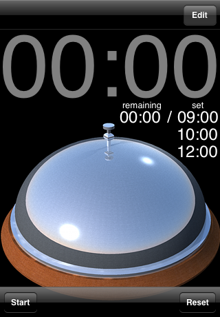
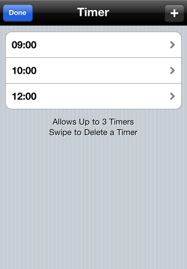
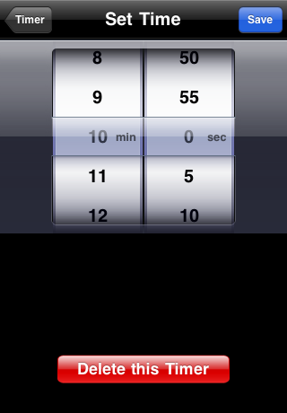

Palmtop Bell
概要 / Description



iPhone / iPod touch 上で卓上ベルを再現するアプリです。ベルが鳴る時間を設定できるタイマ機能付き。iOS 4 以降をインストールした iPhone 3GS と iPhone 4 では、アプリケーション切り替え（Fast App Switching）とローカル通知（Local Notification）に対応しています。
This app simulates a desktop bell. You can set a timer. This app supports Fast App Switching and Local Notification for iPhone 3GS and iPhone 4 that installed iOS 4 or later.
ダウンロード / Download
ヴァージョン履歴 / Version History
2010-09-30, ver. 1.2.2
iPadで起動時にクラッシュするバグを修正 / Fixed iPad crush bug
2010-09-21, ver. 1.2.1
ベル音の差し替え / New Bell Sound
2010-09-08, ver. 1.2
タスクスウィッチングに対応 / Added support for Task Switching
ローカル通知に対応 / Added support for Local Notification
2010-08-04, ver. 1.1
最大3個のタイマを設定できるようになった / Changed the maximum number timers to 3
ベル画像の差し替え / New Bell images
新しいアプリケーションアイコン（Retinaディスプレイ、iPad用） / New Application icons (Support Retina display and iPad)
2010-07-27, ver. 1.0.1
ベル画像の差し替え / New Bell images
設定秒数を5秒刻みに変更 / Changed the interval time to 5 seconds
2010-7-12, ver. 1.0
初期ヴァージョン / First release